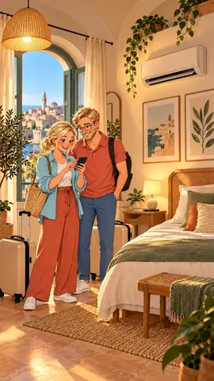

DomoticaBari · Automazioni per le persone
La domotica giusta
per la tua vita.
Tre modi di abitare. Tre storie per scoprire cosa può fare una casa che ascolta.
Casa
Domotica per la casa
Illuminazione, clima, accessi e sicurezza integrati. Scopri le automazioni e le possibilità di configurazione per la tua abitazione.
Guarda la storia e scopri le soluzioni →
B&B
Un soggiorno smart
Accogli gli ospiti e semplifica il tuo lavoro: prenotazioni, web concierge, accessi e gestione del soggiorno con BNBReady.
Guarda la storia e scopri le soluzioni →
Casa accessibile
Più autonomia, ogni giorno
Voce, accessi e comandi raggiungibili. La domotica si adatta alla persona e rende più comodi i gesti quotidiani.
Guarda la storia e scopri le soluzioni →Chi siamo
Dall’automazione industriale alla tua casa.
Esperienza nella programmazione di robot, oggi applicata alla domotica con Home Assistant.
Parliamo del tuo progetto
Una casa che funziona
come serve a te.
Raccontami gli ambienti, le abitudini e le automazioni che vorresti. Partiamo dalle tue esigenze.